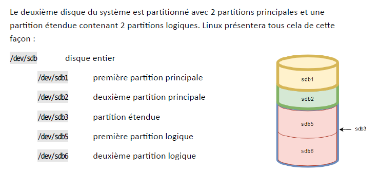
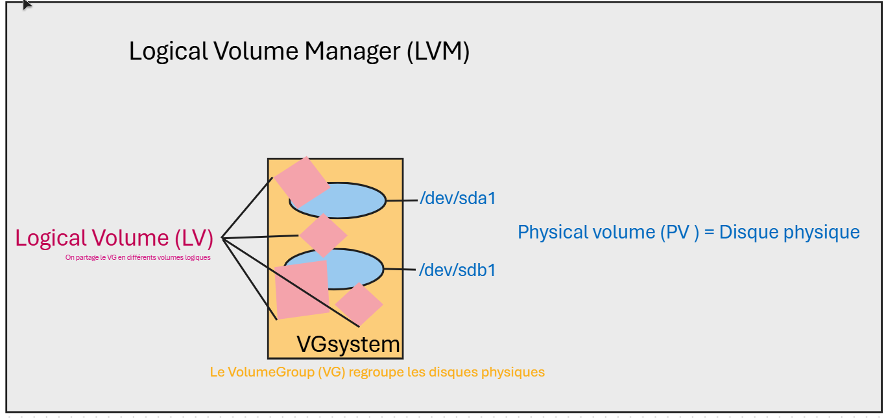
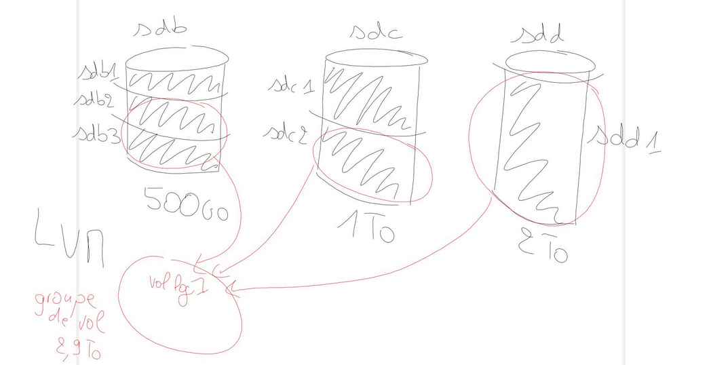

Partitionnement
Créée le lundi 05 mai 2025
Le partitionnement est important lors de l’installation d’une distribution. Le minimum recommandé est de créer un espace de stockage pour la racine (/) et un autre pour l’espace de pagination, également appelé SWAP (sous Linux il n’y a pas de fichier d’échange mais directement un espace de stockage).
Il est conseillé d'utiliser LVM pour gérer les espaces disques (équivalent des disques dynamiques dans Windows).
Un disque dur est représenté sous Linux par un périphérique de type bloc. Afin de mieux comprendre comment Linux présentera ce périphérique et ses sous-divisions, il est important de comprendre le partitionnement.
Le format MBR
Créée en 1983, cette norme indique que les 512 premiers octets d’un disque dur sont utilisés pour l’amorçage du système.
Le MBR (Master Boot Record) est constitué de 2 principaux éléments :
- Le boot loader : 446 premiers octets
- La table de partitions : 64 octets, contient la position des 4 partitions primaires (dont une partition étendue ou pas).
Du fait de ne pouvoir gérer que 4 partitions primaires dans la table de partitions, la norme Intel MBR a choisi de donner la possibilité d’avoir un type particulier de partition principale : la partition étendue.
La partition étendue pourra quant à elle stocker les informations de 56 partitions logiques.
La plus grosse problématique du MBR est la taille limite des partitions fixée au maximum à 2,2To.
Nommages des disques
Sour Linux, les disques de type SATA/SAS sont matérialisés dans le répertoire /dev suivi de sd puis la lettre correspondant au disque.
Par exemple, s’il y a deux disques dans le système : /dev/sda correspond au premier disque détecté /dev/sdb correspond au deuxième disque.
Quand on veut manipuler un disque en entier (avec un outil de partitionnement pas exemple), il faudra donc utiliser le chemin du disque, par ex : /dev/sdb
Linux ne nomme pas les partitions à la suite. Si le format du secteur de démarrage du disque est MBR, Linux va réserver les chiffres de 1 à 4 pour les partitions principales (principale et étendue).
Quel que soit le nombre de partitions principales, s’il y a une partition étendue alors les partitions logiques commenceront quoi qu’il arrive à 5.

Pas vraiment intéressant avec LVM :
On crée un volume group à partir de plusieurs partitions physiques ( /sdX), et ensuite on peut tailler dans ce groupe de volume pour créer plusieurs volumes logiques

